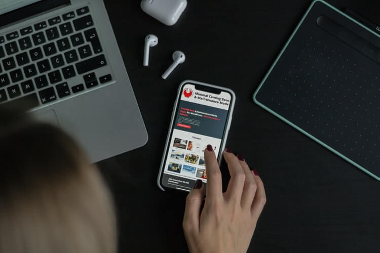

10 кроків, щоб зробити сайт мобільним
Мобільний дружній веб-сайт - це веб-сайт, який дозволяє користувачам легко переміщатися по ресурсу за допомогою своїх смартфонів і планшетів. Контент дружнього для мобільних пристроїв веб-сайту налаштовується відповідно до розміру екрана і дозволом мобільних пристроїв, що використовуються відвідувачами. Це означає, що його різні елементи, такі як сенсорне управління, навігаційні меню, розмір тексту, кнопки і т. д., оптимізовано для мобільних пристроїв.
Таким чином, користувачі можуть знайти те, що вони шукають в лічені секунди. Зробивши свій сайт мобільним, ви значно поліпшите його швидкість, що в свою чергу, стане гарним сигналом для всіх бот-агентів пошукових систем. Крім того, зручний для мобільних пристроїв веб-сайт може допомогти вам підвищити свою репутацію і поліпшити імідж вашого бренду. Створення веб-сайтів, які підходять для мобільних пристроїв гарантує, що ваші сторінки будуть добре працювати на всіх пристроях. Давайте почнемо з 10 основних кроків, які зроблять ваш сайт мобільним.
1. Створіть адаптивний веб-дизайн.
Адаптивний дизайн веб-сайту означає, що ваш існуючий веб-сайт налаштований таким чином, що він автоматично змінює свій макет шляхом адаптації до різних мобільних пристроїв. Всякий раз, коли користувач завантажує ваш сайт на мобільний пристрій, ваш сайт буде підлаштовуватися під розміри екрану пристрою. В результаті користувачу буде легше працювати з вмістом вашого сайту.
Це кращий спосіб зробити ваш сайт мобільним, так як вам не потрібно управляти двома окремими версіями вашого сайту - мобільною і настільною. Крім того, ваші мобільні відвідувачі можуть отримати доступ до всієї інформації, яку ви публікуєте на своєму сайті. Немає необхідності публікувати настільну і мобільну версію кожної наступної статті. Більш того, адаптивний дизайн краще для SEO. Google підтверджує, що це їх кращий формат для мобільних сайтів.
2. Допоможіть людям легше знаходити потрібну їм інформацію.
Більшість мобільних користувачів хочуть знайти потрібну їм інформацію якомога швидше і простіше. Звичайно є люди, які не заперечують витратити деякий час на пошук потрібного контенту, але в основному це користувачі комп'ютерів. У будь-якому випадку, чим простіше кроки, тим краще. Тому подумайте про те, яка інформація знадобиться користувачам найбільше, коли вони знаходяться на вашому веб-сайті, а потім поділіться цим контентом в досить очевидних місцях, таких як домашня сторінка і нижній колонтитул вашого сайту. Ви також можете розглянути питання про створення розділу поширених запитань, де вони можуть знайти всі відповіді, які їм потрібні, всього за кілька торкань і прокрутки.
3. Не використовуйте Flash.
У світі веб-розробки Flash не надто люблять в наші дні. Багато фахівців з SEO стверджують, що використання Flash на вашому сайті - помилка SEO. Відомо, що ця технологія уповільнює завантаження сторінок. Крім того, існує безліч браузерів, операційних систем і пристроїв, таких як iPhone, які взагалі не підтримують Flash.
Насправді, користувачам часто рекомендується блокувати сайти, які використовують Flash, через проблеми безпеки. Flash має довгу історію недоліків безпеки і помилок. Розробники також поділяють думку, що Flash жахливий для мобільних пристроїв, в основному тому, що він розряджає батарею і витрачає пам'ять. Додайте в нього безліч помилок, і ви напевне не будете використовувати його для розробки свого мобільного веб-сайту.
Звичайно, якщо ви хочете, щоб ваш сайт був сучасним і привабливим для користувачів, вам потрібно подумати про додавання технології для анімації. Новий стандарт - елемент HTML5 Canvas. Він підтримується всіма браузерами, більш ефективний і працює на всіх пристроях. Вам не потрібно мати спеціальне програмне забезпечення для його запуску, і не потрібно турбуватися про проблеми безпеки.
4. Увімкніть мета-тег Viewport.
Мета-тег viewport - це параметр, який дозволяє вам повідомляти мобільним браузерам, як завантажувати ваш сайт. Це дуже корисно, якщо ви вирішили зберегти один і той же дизайн сайту для мобільних і настільних комп'ютерів. Іншими словами, якщо ваш сайт має адаптивний дизайн (перевірте крок 1). Метатег viewport добре візуалізується як з великим, так і з меншим віртуальним вікном перегляду.
5. Функція автозаміни може бути незручною. Вимкни це.
Включення функції автозаміни для виправлення поширених орфографічних або друкарських помилок може реально заощадити час користувача. Це зручно в тому випадку, якщо користувач використовує додаток або веб-сайт, де йому потрібно створити текстовий документ, поспілкуватися з іншою людиною і так далі.
Що стосується різних форм на вашому веб-сайті, які запитують ім'я або адресу електронної пошти, або дозволяють користувачеві виконувати пошук і перегляд статей на вашому веб-сайті, то краще відключити функцію автозаміни. В іншому випадку користувачі можуть легко розлютитися, коли їх телефон або планшет спробує змінити своє ім'я або адресу електронної пошти за допомогою більш поширених слів. Щоб відключити функцію автозаміни для різних полів введення, необхідно включити автозаміну = вимкнути в HTML кожного поля.
6. Зробіть розміри кнопок придатними для мобільних пристроїв.
Натискання на кнопку практично будь-якого розміру - досить просте завдання, коли ви робите це за допомогою миші на робочому столі. Однак іноді маленькі кнопки можуть дратувати, особливо коли користувачеві потрібно «клацнути» їх пальцем на екрані свого смартфона. Якщо є кілька маленьких кнопок, які знаходяться дуже близько одина до одної, користувач може легко натиснути одну, намагаючись натиснути іншу, і це безумовно викличе у нього / неї роздратування.
7. Використовуйте досить великі шрифти.
Якщо ваш шрифт за замовчуванням крихітний і невеликого розміру, користувачі можуть зазнавати труднощів при читанні контенту на своєму маленькому екрані. Відповідний вибір розміру шрифту - 14 пікселів. Так що перевір його і подумай, чи підійде більший.
Також рекомендується робити ставки на стандартні шрифти без засічок. Всі незвичайні шрифти, які вимагають завантаження, уповільнюють процес завантаження вашого сайту, що може дратувати користувачів і змушувати їх покинути ресурс.
8. Стисніть ваші зображення і CSS.
Один з перевірених способів зменшити час завантаження сайту і зробити його більш зручним для мобільних пристроїв - це стиснення файлів, що займають багато місця. Файли великого розміру, такі як зображення з високою роздільною здатністю і елементи CSS, впливають на час завантаження, що є поганим сигналом як для пошукових систем, таких як Google, Bing, Yahoo і т. д., Так і для користувачів. Швидкість веб-сайту тепер важлива як ніколи для настільних і мобільних версій веб-сайтів.
Стиснення великих файлів зображень не знизить їх якість, а тільки полегшить їх завантаження. Цей крок безумовно усуне негативний ефект повільного процесу завантаження, в той час як якість того, що бачать люди, залишиться високою. TinyPNG - це зручний і ефективний сервіс для зменшення розміру файлів PNG і Jpeg.
9. Надати опцію перемикання на робочий стіл.
Деякі з ваших мобільних відвідувачів можуть віддати перевагу перегляду настільної версії вашого сайту. Переконайтеся, що ви даєте їм можливість зробити це. Ви хочете, щоб ваші відвідувачі могли взаємодіяти з вашим сайтом так, як їм зручно.
10. Зробіть мобільне тестування рутинним.
Що може бути кращим, ніж забезпечення того, щоб ваш веб-сайт працював на мобільних пристроях так само добре, як і ви самі? Краще, що ви можете зробити, це взяти мобільний пристрій, відкрити свій веб-сайт і витратити деякий час на його перегляд, щоб побачити, чи важко що-небудь побачити або важко на ньому торкнутися, незручно заповнити і т. Д. Крім того, запитаєте своїх співробітників.
Чи є мій сайт мобільним?
Якщо питання «Чи є мій сайт мобільним?» у вас на думці, ви можете отримати відповідь прямо зараз. Перевірити, чи має ваш веб-сайт зручний зовнішній вигляд і функціональність, легко. Google створив зручний веб-інструмент для мобільних пристроїв, який дозволяє вставляти URL-адресу або код сторінки і бачити, як легко відвідувач може використовувати вашу сторінку на мобільному пристрої.
Все, что вам нужно сделать, это вставить выбранный URL и нажать кнопку TEST URL
Потім тест Google проаналізує код вашого веб-сайту і відобразить результат. Google навіть перерахує проблеми, які впливають на мобільність вашої сторінки, і запропонує рішення, як це виправити.
Щоб проаналізувати, чи підходить сторінка для мобільних пристроїв чи ні на Bing, ви можете використовувати їх інструмент для перевірки мобільності.